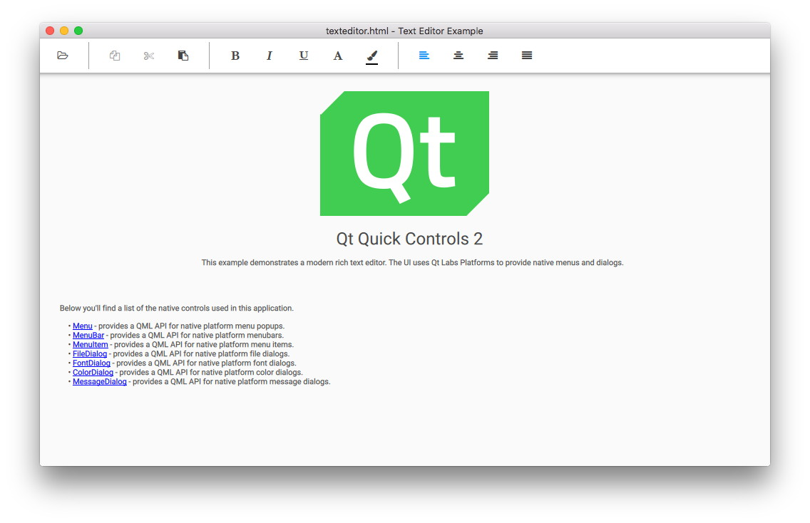

Qt Quick Controls - Text Editor
A QML app using Qt Quick Controls and a C++ class to provide a fully-functional rich-text editor application.
The Text Editor Example presents a sample HTML file using the TextArea control, preserving the HTML formatting. The application comes with two user interfaces; one for traditional desktop platforms with a mouse pointer, and another simpler, touch-oriented version.
Desktop User Interface

The desktop version is a complete text editor with capabilities for formatting text, and opening and saving HTML and plain text files. It demonstrates the native-looking dialogs and menus using the Qt Labs Platform module. These types are mostly suitable for desktop platforms with support for multiple top-level windows, a mouse pointer, and moderate screen size.
The desktop UI uses FileDialog for opening and saving files:
FileDialog {
id: openDialog
fileMode: FileDialog.OpenFile
selectedNameFilter.index: 1
nameFilters: ["Text files (*.txt)", "HTML files (*.html *.htm)"]
folder: StandardPaths.writableLocation(StandardPaths.DocumentsLocation)
onAccepted: document.load(file)
}
FileDialog {
id: saveDialog
fileMode: FileDialog.SaveFile
defaultSuffix: document.fileType
nameFilters: openDialog.nameFilters
selectedNameFilter.index: document.fileType === "txt" ? 0 : 1
folder: StandardPaths.writableLocation(StandardPaths.DocumentsLocation)
onAccepted: document.saveAs(file)
}
It uses FontDialog and ColorDialog for choosing fonts and colors:
FontDialog {
id: fontDialog
onAccepted: {
document.fontFamily = font.family;
document.fontSize = font.pointSize;
}
}
ColorDialog {
id: colorDialog
currentColor: "black"
}
It also uses Menu and MenuItem that provide a context menu to format text within:
Menu {
id: contextMenu
MenuItem {
text: qsTr("Copy")
enabled: textArea.selectedText
onTriggered: textArea.copy()
}
MenuItem {
text: qsTr("Cut")
enabled: textArea.selectedText
onTriggered: textArea.cut()
}
MenuItem {
text: qsTr("Paste")
enabled: textArea.canPaste
onTriggered: textArea.paste()
}
MenuSeparator {}
MenuItem {
text: qsTr("Font...")
onTriggered: fontDialog.open()
}
MenuItem {
text: qsTr("Color...")
onTriggered: colorDialog.open()
}
}
Note: There is also a standard menubar with more options than the context menu.
Touch User Interface

The touch user interface is a simplified version of the text editor. It is suitable for touch devices with limited screen size. The example uses file selectors to load the appropriate user interface automatically.
Unlike the desktop version, which uses top-level dialogs, the touch version uses the QML Dialog type, which is not a top-level window. This type of dialog is fully supported on mobile and embedded platforms that do not support multiple top-level windows.
Dialog {
id: aboutDialog
standardButtons: Dialog.Ok
modal: true
x: parent.width / 2 - width / 2
y: parent.height / 2 - height / 2
contentItem: Label {
text: qsTr("Qt Quick Controls 2 - Text Editor Example")
}
}
C++ Backend
Both user interfaces use the same C++ backend, which supports opening, formatting, and editing a document. The C++ class, DocumentHandler, extends QObject and is registered as a QML type under the namespace io.qt.examples.texteditor 1.0.
The following snippets show how the type is registered under a namespace and later imported and instantiated by main.qml. For more information about registering C++ classes as QML types, see Defining QML Types from C++.
QML type registration:
#include <QtQml/qqml.h> ... qmlRegisterType<DocumentHandler>("io.qt.examples.texteditor", 1, 0, "DocumentHandler"); ...
QML namespace import:
import io.qt.examples.texteditor 1.0
QML instance:
DocumentHandler {
id: document
document: textArea.textDocument
cursorPosition: textArea.cursorPosition
selectionStart: textArea.selectionStart
selectionEnd: textArea.selectionEnd
textColor: colorDialog.color
Component.onCompleted: document.load("qrc:/texteditor.html")
onLoaded: {
textArea.text = text
}
onError: {
errorDialog.text = message
errorDialog.visible = true
}
}
Running the Example
To run the example from Qt Creator, open the Welcome mode and select the example from Examples. For more information, visit Building and Running an Example.